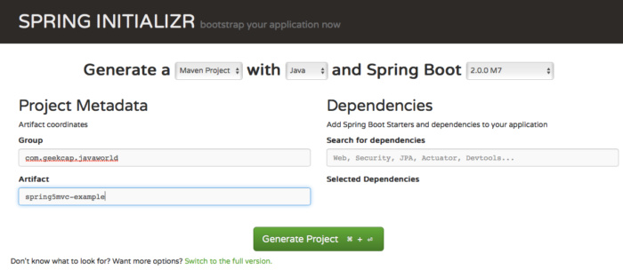
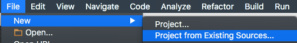
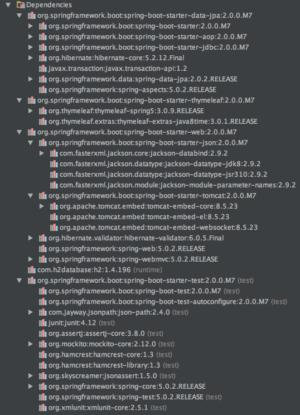
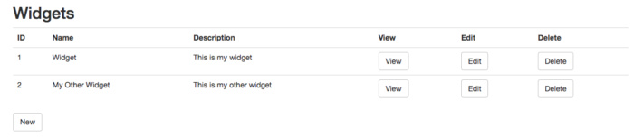
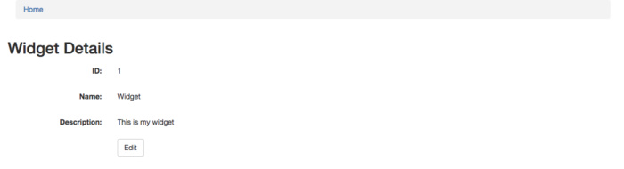

Spring Series Part 2, Spring MVC
Spring MVC is the Spring framework’s traditional library for building Java Web applications. It is one of the most popular web frameworks for building fully functional Java web applications and RESTful web services. In this tutorial, you’ll get an overview of Spring MVC and learn how to build Java Web applications using Spring Boot, Spring Initializr, and Thymeleaf.
Spring Boot with Spring Initializr
We’ll fastrack our Spring MVC web application with the help of Spring Boot and Spring Initializr. Given input for the type of application to be built, Spring Initializr uses the most common dependencies and defaults to setup and configure a baisc Spring Boot application. You can also add custom dependencies and Spring Initializr will include and manage them, ensuring version compatibility with both third-party software and Spring. Spring Boot applications run standalone, without requiring you to provide a runtime environment.
In this case, since we’re building a web application, Spring Boot will automatically include and configure Tomcat as part of the app’s runtime. We can also customize the app by adding an H2 database driver to our Maven POM file. Spring Boot will then automatically create an embedded database and DataSource instance in the application context. Once the dependencies are set, Spring Boot will provide default configurations fro the application. Of course we can change the configurations if we want to, but thanks to Spring Boot we hava a headstart: a fully configured, working application right out of the box.
once we’ve selected and configured our dependencies, we’ll pass those selections to Spring Initializr, which will provide a downloadable ZIP file containing a base Spring Boot project.
Spring MBC with H2 database engine
We’ll start by creating a basic Spring MVC web application that persists data to an H2 embedded database.
Step 1. Setup adn configure the app
Navigate to Spring Initializr at start.spring.io and select Generate a Maven Project with java and Spring Boot 2.0.X, where X is the latest Spring Boot version (2.0.3 at time of this writing). Make sure you select Spring Boot 2.x so that you can implement Spring Web MVC 5. Spring Boot 1.4 and Spring Boot 1.5 will implement Spring 4.
Enter a group name the format matching your web address, such as com.geekcap.javaworld, and enter an artifact name, such as spring5mvc-example. Figure 1 shows you my configuration.

To add dependencies to the web app, you may either enter a comma-separated list of dependencies into the Search for dependencies text field or click on Switch to the full version. We’ll take the easier route by clicking on Switch to the full version. The dependencies are divided into groups, such as Core, Web, and Template Engines. For this example, select the checkboxes for: Web —> Web, Template Engines —> Thymeleaf, SQL —> JPA, and SQL —> H2. Here’s what each of those selections will add to the application:
- Web: Spring MVC and Tomcat
- Thymeleaf: Thymeleaf web template engine
- JPA: Spring JPA, Hibernate, and Spring Data
- H2: The H2 embedded database
When you’re finished, click the Generate Project button at the bottom of page. Spring Initializr will create a readymade ZIP file with all the required project sources, which you can download.
Step 2. Import the Spring Initializr project to Your IDE
Extract the ZIP file from Spring Initializr, then import the project into your favorite IDE. For example, to import the project into IntelliJ, choose File —> New Project, as shown in Figure 2.

Step 3. Setup your Maven POM
Next, navigate to Import project from external module, choose Maven, and press Next. Be sure to choose a Java 1.8 project SDK, then hit Finish.
The Spring Boot starter app
now let’s take a look at the Spring Boot starter application that has been generated by our (minimal) efforts so far.
To start, Listing 1 shows the Maven POM file.
Listing 1. Maven pom.xml
1 | <?xml version="1.0" encoding="UTF-8"?> |
Notice that the POM file uses a special parent POM: spring-boot-starter-parent. We’ll use the parent POM to manage the versions of all our dependencies and ensure versions are compatible. The repositories at the end of the POM file reference teh Spring snapshot and milestone repositories. We need these because Spring Boot 2.x is still a milestone release at the time of this writing.
The dependencies are quite minimal, and most are prefaced with spring-boot-starter:
- spring-boot-starter-data-jpa
- spring-boot-starter-thymeleaf
- spring-boot-starter-web
- spring-boot-starter-test
Each of these starter dependencies brings in all of the sub-dependencies it needs. Figure 3 shows the partially expanded dependency view in IntelliJ.

The POM file includes the following dependencies:
- spring-boot-starter-data-jpa includes Hibernate and Spring Data
- spring-boot-starter-thymeleaf includes the Thymeleaf template engine
- spring-boot-starter-web includes spring-boot-starter-tomcat, an embedded version of Apache Tomcat
- spring-boot-starter-json includes the Jackson JSON libraries
- spring-web and spring-webmvc includes Spring MVC
- spring-boot-starter-test includes testing libraries such as JUnit and Mockito
When Spring Boot sees these dependencies in the CLASSPATH, it initiates automatic configuration. For example, when it find spring-boot-starter-web, it creates an embedded version of Tomcat, and when if finds H2 and spring-boot-starter-jpa it creates an H2 embedded database and a Hibernate EntityManager. It then wires the EntityManager into Spring Data.
Spring Boot also creates a single class that can be used to run the application. The class for the example application is shown in Listing 2.
Listing 2. SpringExampleApplication
1 |
|
The class leverages the SpringApplication.run() method, passing in the class to run (Spring5mvcExampleApplication in this exmaple). The @SpringBootApplication annotation includes the following annotations:
- @Configuration informs Spring that the Spring2mvcExample class contains configuration information. (This annotation can be used to create beans that will get registered with the Spring context.)
- @EnableAutoConfiguration tells Spring to automatically configure resources from dependencies found in the CLASSPATH, such as H2 and Tomcat
- ComponentScan tells Spring to can packages in the CLASSPATH under the current package (com.geekcap.javaworld.spring5mvcexample) for Spring annotated components such as @Service and @Controller
Spring scans the CLASSPATH and automatically creates components such as the embeded Tomcat server and H2 database. It then populates the Spring context with the application components found in the package scan. In essence, Spring Boot makes it very easy to select and configure the services, components, controllers, entities, and so forth that you need for your application. Once you’ve done that, Spring will automatically find them, make them available in the Spring context, and autowire everthing together.
We’ve got our Spring Boot starter project setup and ready to go. In the next section we’ll create the Spring MVC components for our Java Web application.
What is the Spring context?
The Spring context is a registry of all available Spring beans. Classes are identified as Spring beans by annotating them with specific Spring annotations. Examples include @Service, which identifies a business service, @Controller, which identifies a Spring MVC controller (i.e., handles web requests), and @Entity, which is a JPA annotation used to identify classes that are mapped to database tables.Once these beans are annotated they need to be registered with the Spring context, which Spring Boot does by performing a package scan of all classes in packages in your project. As the Spring context is being built, it implements the inversion-of-control (IoC) design pattern through dependency injection: when a Spring bean needs a dependency, such as a service or repository, the bean can either define a constructor that accepts the dependent bean or it can leverage the @Autowired annotation to tell Spring that it needs that dependency. Spring resolves all dependencies and “autowires” the application together.
Dependency Injection is a powerful design pattern because, rather than creating and managing dependencies inside your code — which can be messy and leads to tightly coupled classes — you can instead delegate control to the Spring container. Your class simply tells the container what dependencies it needs to run and the container provides the appropriate dependencies to your class at runtime.
About Spring MVC 5
Spring MVC implements the poluar Model-View-Controller pattern, which you’ve probably seen in other web framework. The Model-View-Controller pattern separates concerns into the categories:
- Model represents your domain object
- View renders your model tp a view, such as to an HTML page
- Controller sits between your view and model and translates change requests in the view into changes in the model, and vice versa. In practical terms, the controller accepts incoming requests, potentially updates the model, and send your model objects to a “view” to render back to the client
In Spring MVC, controllers are identified by the @Controller annotation and accompanied by a @Requestmapping annotation. The annotation defines the HTTP verb (standard HTTP commands like GET, POST, PUT, and DELELE) and URI for which the request-mapping method will be applied. Spring 4 introduced shortcut request mappings, which make things even easier. We’ll use these mappings — @GetMapping, @PostMapping, @PutMapping, @PatchMapping, and @DeleteMapping — for our example appliation.
The model in Spring MVC
For our application, we’ll define a simple model object, a Widget, store it in an embeded H2 database, and build a controller to menage widgets. Let’s start with the Widget class, which is shown in Listing 3.
Listing 3. Widget
1 |
|
The widget class in a plain old Java object (POJO) that is annotated with JPA (Java Persistence API) annotations. In this case there are three annotations:
- @Entity identifies Widget as an entity that can be persisted to a database
- @Id identifies the id field as the primary key of the entity
- @GeneratedValue tells the JPA EntityManager that the key should be automatically generated in the database
Note that EntityManager is created automatically for us because we included JPA in the Spring Initializr.
The Widget class manages three fields:
- id is the ID, or primary key of the widget
- name is the name of the widget
- description is a description of the widget
To persist widgets to and from our embedded (内嵌) database, we need to leverage (施加影响) Spring Data. Basically, we’ll define an interface that extends one of Spring Data’s interfaces, such as CrudRepository, and Spring Data will provide an implementation of that interface as runtime.
The CrudRepository interface includes the following methods:
- findById finds the entity in the database with the specified ID
- findAll returns all entities of the repository type from the database (note that there are other Spring Data repository interfaces, such as PagingAndSortingRepository, that can help manage larger data sets)
- findAllById passed a collection of IDs, this method returns all entities for those IDs
- save persists an entity to the database (create or update)
- saveAll saves a collection of entities to the database
- delete deletes the specifies entity
- deleteById deletes the entity with the specified ID
- deleteAll delete all entities managed by the repository
- count returns the number of entities that are in the database
- existsById returns true if an entity with the specified ID exists in the database
For our example, we’ll create a WidgetRepository interface that extends CrudRepository, as shown in Listing 4.
Listing 4. WidgetRepository
1 | public interface WidgetRepository extends CrudRepository<Widget, Long> { |
The WidgetRepository allows us to perform all create, read, upadte, and delete (CRUD) operations on widgets. The two parameters passed to the CrudRepository are Widget, which represents the type of entity that the repository manages, and Long, which is the type of the primary key for the Widget entity. (This is a simple implementation) that scratches the surface of what you can do with Spring Data. I encourage you to learn more about this useful Spring project.)
The Controller in Spring MVC
With our Widget entity and WidgetRepository in hand, we’re ready to build a controller. Listing 5 shows the source code for the WidgetController.
Listing 5. WidgetController
1 |
|
The WidgetController is annotated with the @Controller annotation. When Spring performs a package can of the classes, it will find the @Controller annotation, create an instance of this class, and add it to the Spring context, configured to handle web requests. This WidgetController defines a WidgetRepository implementation created by Spring Data and automatically wire the repository into the controller.
The WidgetController then difines a set of methods to handle requests, using the @GetMapping and PostMapping annotations. These annotations accept the URI path that each method is handling, defining the HTTP verb accordingly. Because we are using the Thymeleaf engine, each method returns a String naming the template to render. Templates are stored in src/main/resources/templates as HTML files with specific Thymeleaf markup, which is shown below.
The method that return a direct template name are all passed a Model object. The Model object implements a Spring UI interface and provides methods to add attributes to the model. These attributes will be made available to the template to be rendered. For example, in the getWidgetById method, we retrieve a Widget from the database and set it in the Model with the key widget. The template can then access that Widget using the widget key.
Controller methods and the view template
Next let’s walk through each WidgetController method and its corresponding view template. The homepage for the application is the /widgets page, which shows a list of all widgets in the database. The getWidgets method retrieves all widgets by calling the WidgetRepository‘s findAll method, sets it as the widgets attribute in the model, and returns widgets. Listing 6 shows the widgets.html tempalte file.
Listing 6. widgets.html
1 |
|
Thymeleaf templates are HTML files that import the http://www.thymeleaf.org XML namespace, as seen in the html tag. With this namespace include (as th), Thymeleaf allows us to add tags to existing HTML elements. This enables you to create and style your HTML files without running your application in Tomcat.
For this example, we’ve added the Twitter Bootstrap library, which makes it eaiser to create a nice layout. Rather than constantly restarting Tomcat to view pages, this lets us build the page using an editor, then render the page in a browser. In order to work with your JavaScript and CSS lacally you also need to include the JavaScript href and script source src values that point to your relative CSS and JavaScript files, respectively. The th:href and th:src attributes will be resolved to actual URI paths by Thymeleaf in a live application, and will overwrite the href and src attribute values when the page is rendered.
The HTML file in Listing 6 contains a table that shows a summary of each widget, with buttons to view the details of a widget, edit a widget, or delete a widget. We use the model to pass in a collection of widgets, and we access those by adding the th:each attribute of the tr (table row) tag, where th:each is Thymeleaf’s implementation of a for-each contruct. This will create one row for each item in our collection. The th:each attribute is passed the value widget : ${widgets}. This retrieves the “widgets” collection from the model and assigns each widget to a local variable, “widget”, that will be used inside the row. We can then extract values from the widget using the ${widget.propertyName} syntax.
For the first three rows, we include the th:text attribute in each table cell (td), extracting fields from the widget. For the last three rows, we add hyperlink to our other controller URIs:
- /widget/{id} shows the widget with the specified ID
- /widget/edit/{id} shows the widget with the specified ID in an editable form
- /widget/delete/{id} deletes the widget with the specified ID, then shows the updated list of widgets
The bottom of the page adds a New button that allows the user to create a new widget. Widgets are created through the /widget/new URL and presented in the same form as the /widget/edit/{id} URI.
Figure 4 shows a screenshot of the widget list page.

When the user presses the View button, the getWidgetById method is called:1
2
3
4
5("/widget/{id}")
public String getWidgetById(@PathVariable Long id, Model model) {
model.addAttribute("widget", widgetRepository.findById(id).orElse(new Widget()));
return "widget";
}
The method is mapped to a GET request for /widget/{id} and the id is extracted using the @PathVariable annotation. If you have multiple variables in your path, you can include them using the @PathVariable annotation with a variable name that matches the path variable name. In this case, the getWidgetById method retrieves the widget with the specified ID from the widgetRepository, then assigns it to the model’s “widget” property.
You might have noted that the WidgetReporitory.findById method returns an Optionals in Java wrap objects: if the object is persent then you can retrieve it using the get() method; if the object is not present then the Optional will be equal to Optional.emtry(). You can determine if the result has an object by calling the isPresent() method. Alternatively, as I did in this case, you could leverage the orElse() method, which returns the object if it is present. Otherwise, it returns the widget created inside the orElse method. In a production application you would want to return a valid widget or return an error page. For now, we can simply return an emptry widget. Finally, this method returns “widget”, which tells Spring MVC to render this Widget using the “widget.html” template, shown in Listing 7.
Listing 7. widget.html
1 |
|
Aside from the Bootstrap markup, this HTML file shows the three widget fields in paragraph elements using the th:text Thymeleaf attribute with the ${widget.propertyName} notation. If you are not familiar with Bootstrap, don’t let the form trick you into thinking this a a proper HTML form that accepts fields; it js just a layout paradigm.
The only other two things I added are:
- A breadcrumb that allows the user to naviagate back to the homepage (widget list), using an anchor tag with the th:href attribute that points to the /widgets page
- A button (disguised as an anchor tag but render as a button using the Bootstrap class btn btn-default CSS) with a th:href attribute pointing to ${‘/widget/edit’ + widget.id}. This notation performs a String concatenation of /widget/edit with the ID of the widget, resulting in something like /widget/edit/1.
An example of this apge is shown in Figure 5.

If the user presses the Edit button, the editWidget method is called:1
2
3
4
5("/widget/edit/{id}")
public String editWidget(@PathVariable Long id, Model model) {
model.addAttribute("widget", widgetRepository.findById(id).orElse(new Widget()));
return "widgetform";
}
This method maps to the /widget/edit/{id} URI, retrieves the widget from the database, sets it an the model’s “widget” attribute, and tells Spring to render it using the “widgetform.html” Thymeleaf, shown in Listing 8.
Listing 8. widgetform.html
1 |
|
The template introduces a proper Thymeleaf form. To build a form with Thymeleaf, you specify the object that the form is operation on, using the th:object attribute of the form, and then you can access that object’s properties using th:field attribute in form elements. These field attributes are accessed using the *{propertyName} notation, which refers back to the form’s object. In this example, we define a hidden text field to hold the ID (we don’t want the user changing the primary key in the database) and we aa the name and description fields. At the end of the document we add a submit button, which submits the form to the th:action, which points to @{/widget}. Notice that we use the @ symbol to reference and the $ symbol to reference model objects.
We are able to leverage the “widgetform” for both creating new Widgets adn editing existing Widgets by adding an empty Widget object in the newWidget method:1
2
3
4
5("/widget/new")
public String newWidget(Model model) {
model.addAttribute("widget", new Widget());
return "widgetform";
}
Because we pass an empty Widget object through the “widget” model attribute, the form will not fail if a Widget is not present. This allows us to reuse the same form both for creating and editing widgets.
Now that we have our controller and templates definded, we’re ready to run the application. To run a Spring Boot application, execute the following Maven command:1
mvn spring-boot:run
You should see Spring start Tomcat, create an embedded H2 database with the name testdb and then show a summary of the URI mappings for your Widgetontroller.
To see your application in action, open a browser to the following URL:1
http://localhost:8080/widgets
When you are ready to release and run your application in production, you can build your project with then standard mvn clean install and then run the resultan executable JAR file:1
2mvn clean install
java -jar target/spring5mvc-example-0.0.1-SNAPSHOT.jar
Conclusion
Spring MVC is the traditional Spring framework library for building Java web applications. This article introduced you to Spring MVC web developement using Spring Boot, Spring initializr, and the Thymeleaf view rendering engine.